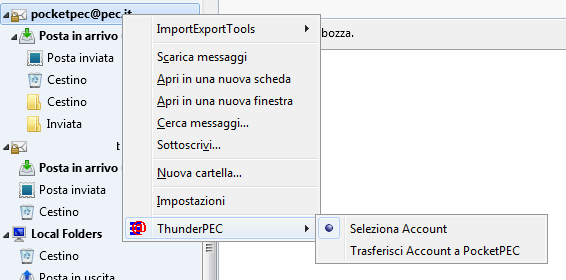

Il menu contestuale
Utilizzando il tasto destro
sull'elenco delle caselle è possibile accedere al menu
contestuale relativo che permette di abilitare/disabilitare ThunderPEC
su una particolare casella PEC ovvero accedere alla finestra di
integrazione con PocketPEC

Utilizzando il tasto destro del mouse
all'interno dell'elenco dei messaggi, è possibile accedere al menu
contestuale relativo. Come nel caso del menu principale Messaggio, ThunderPEC introduce
un sottomenu all'interno del menu contestuale che è abilitato quando si
lavora sulle caselle di posta elettronica per le quali ThunderPEC è attivo.
Il sottomenu ThunderPEC permette di operare direttamente sul messaggio di posta
elettronica principale trasportato all'interno di un messaggio PEC.
Ad esempio, utilizzando la voce di menu Stampa, ThunderPEC provvederà a stampare il messaggio di posta elettronica principale al posto dell'intero messaggio PEC.
Questo
semplifica e velocizza la gestione del messaggio, evitando di dover
aprire il messaggio di posta principale, inserito come allegato
all'interno di un messaggio PEC.
La funzionalità Archivia permette di esportare in un file ZIP i messaggi selezionati (la funzione è descritta nella pagina Archivia Notifiche)